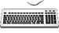
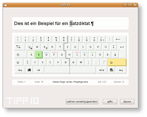
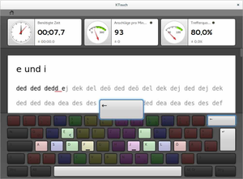
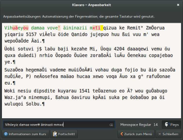

Schreibtrainer
Dieser Artikel wurde für die folgenden Ubuntu-Versionen getestet:
Ubuntu 14.04 Trusty Tahr
Zum Verständnis dieses Artikels sind folgende Seiten hilfreich:
 Ein Schreibtrainer ist eine Anwendung, die das Erlernen des effizienten und schnellen Schreibens mit einer Computertastatur nach dem Zehnfingersystem ermöglicht. In bebildertern und aufeinander aufbauenden Lektionen wird von der korrekten Fingerposition beginnend bis zur Perfektion gearbeitet. Diverse Tastaturlayouts stehen zur Wahl und mithilfe einer Statistik kann man den eigenen Lernerfolg gut nachverfolgen.
Programme¶
TIPP10¶
TIPP10  ist ein freier Zehnfingersystem-Schreibtrainer. Seine für Einsteiger angenehm einfache grafische Oberfläche präsentiert sich modern und übersichtlich. Die Besonderheit von TIPP10 liegt jedoch im intelligenten Lernprogramm, das sich die Fehler des Benutzers merkt, um gerade diese häufiger zu wiederholen. Aufeinander aufbauende Lektionen ermöglichen einen merklichen schrittweisen Fortschritt. Dies und vieles mehr bietet dieser umfangreiche Schreibtrainer für die Plattformen Windows, Mac OS X und GNU/Linux.
ist ein freier Zehnfingersystem-Schreibtrainer. Seine für Einsteiger angenehm einfache grafische Oberfläche präsentiert sich modern und übersichtlich. Die Besonderheit von TIPP10 liegt jedoch im intelligenten Lernprogramm, das sich die Fehler des Benutzers merkt, um gerade diese häufiger zu wiederholen. Aufeinander aufbauende Lektionen ermöglichen einen merklichen schrittweisen Fortschritt. Dies und vieles mehr bietet dieser umfangreiche Schreibtrainer für die Plattformen Windows, Mac OS X und GNU/Linux.
Installation¶
Zur Installation kann man auf ein fertiges Fremdpaket mit der Endung .deb zurückgreifen. Den passenden Download findet man unter dem Link "TIPP10 für (K)Ubuntu". Nach dem Herunterladen installiert man das Paket tipp10_debian_v2-1-0.deb  wie gewohnt [1]. Bei Ubuntu-Varianten mit einem Anwendungsmenü wird der Eintrag "Bildung -> TIPP10" erstellt, über den man das Programm starten kann.
wie gewohnt [1]. Bei Ubuntu-Varianten mit einem Anwendungsmenü wird der Eintrag "Bildung -> TIPP10" erstellt, über den man das Programm starten kann.
Hinweis!
Fremdpakete können das System gefährden.
Wer das 32-Bit-Paket unter einem 64-Bit-System nutzen möchte, benötigt noch folgende Pakete [2]:
libxcursor1:i386
libsm6:i386
libxrandr2:i386
libxi6:i386
libxinerama1:i386
libfreetype6:i386
libfontconfig1:i386
libglib2.0-0:i386
libstdc++6:i386
 mit apturl
mit apturl
Paketliste zum Kopieren:
sudo apt-get install libxcursor1:i386 libsm6:i386 libxrandr2:i386 libxi6:i386 libxinerama1:i386 libfreetype6:i386 libfontconfig1:i386 libglib2.0-0:i386 libstdc++6:i386
sudo aptitude install libxcursor1:i386 libsm6:i386 libxrandr2:i386 libxi6:i386 libxinerama1:i386 libfreetype6:i386 libfontconfig1:i386 libglib2.0-0:i386 libstdc++6:i386
Manuell¶

Die Installation kann alternativ als Binärarchiv bzw. über den Download der "ausführbaren Version" für Linux erfolgen: tipp10_linux_v2-1-0.tar.gz . Die heruntergeladene Archivdatei muss nun noch entpackt [3] werden. Das Archiv enthält eine Datei namens tipp10. Dies ist bereits die fertig ausführbare Programmdatei. Damit das Programm ausgeführt werden kann, müssen bei einem 64-Bit-System die oben erwähnten Pakete nachinstalliert werden.
Der Ordnung halber kann man den Programmordner nach /opt verschieben und eine Verknüpfung in /usr/local/bin/ [4] anlegen. Durch die folgenden Befehle wird TIPP10 dort entpackt und ein Symlink erzeugt:
sudo tar -xzf tipp10_linux_v2-1-0.tar.gz -C /opt/
Beim nächsten Befehl bitte das Verzeichnis '/opt/tipp10.../tipp10' vorher auf Vorhandensein prüfen!
sudo ln -s /opt/tipp10/tipp10 /usr/local/bin/
Das Programm kann nun wie gewohnt aus dem Terminal über folgenden Befehl gestartet werden:
tipp10
Bei der manuellen Installation von TIPP10 wird kein Starteintrag erstellt. Dieser und ein passendes Symbol liegt jedoch dem Programmpaket seit Version 2.1.0 bei. Dazu kopiert man die Datei tipp10.desktop aus dem Programmordner mit Root-Rechten in den Ordner /usr/share/applications/. Sollte das Symbol nicht gefunden werden, muss gegebenenfalls der Icon-Pfad in der Datei tipp10.desktop angepasst werden:
[Desktop Entry] Encoding=UTF-8 Name=TIPP10 Comment=Touch Typing Tutor Comment[de]=10-Finger-Schreibtrainer Exec=tipp10 Icon=/opt/tipp10/tipp10.png Terminal=false Type=Application Categories=Education;
Nach dem Speichern der Datei lässt sich TIPP10 über
"Bildung → TIPP10"
aus dem Menü heraus starten.

KTouch¶
Ktouch  ist ein ausgewachsener Schreibtrainer und Bestandteil des KDE Education Projects. KTouch bietet eine Vielzahl an Tastaturlayouts, editierbare Trainingslektionen und eine genaue Statistik über den Lernerfolg.
ist ein ausgewachsener Schreibtrainer und Bestandteil des KDE Education Projects. KTouch bietet eine Vielzahl an Tastaturlayouts, editierbare Trainingslektionen und eine genaue Statistik über den Lernerfolg.
Installation¶
Folgendes Paket muss installiert werden:
ktouch
mit apturl
Paketliste zum Kopieren:
sudo apt-get install ktouch
sudo aptitude install ktouch
Die angebotenen Kurse richten sich nach dem per ibus eingestellten Tastaturlayout. Eine Liste der möglichen Layouts erhält man per
ibus list-engine
Das setzen der Engine erfolgt über ibus engine [engine], also zB
ibus engine xkb:us:dvorak:eng

Klavaro¶
Klavaro ist ein schlichtes Programm für die Desktop-Umgebungen GNOME und Xfce zum Erlernen des Zehnfingerblindsystems mit mehreren Modi. Zunächst kann man im Grundkurs das blinde Erreichen der Tasten einüben und diese später im Zufallsmodus weiter verfestigen. Die fortgeschrittenen Übungen helfen, die eigene Geschwindigkeit zu steigern und später ganze Texte flüssig und fehlerfrei blind zu tippen. Angespornt wird man durch die Statistiken über Geschwindigkeit und Fehlerfreiheit, die auch graphisch den Fortschritt darstellen.
Online-Schreibtrainer¶
Möchte man nicht extra ein Programm installieren oder nur kurz überprüfen, wie es um die eigene Schreibfertigkeit bestellt ist, kann man auch auf folgende Webseiten zurückgreifen:
Schnell-Schreiben.de
- Kurs mit 11 Lektionen + Speedtest (JavaScript erforderlich) keybr.com
- freies Üben von Schnellschreiben, auch mit deutschen Texten (Flash erforderlich) Schreibtrainer Online
- Kurs mit 100 Lektionen (JavaScript und Flash erforderlich)
- Erstellt mit Inyoka
-
 2004 – 2017 ubuntuusers.de • Einige Rechte vorbehalten
2004 – 2017 ubuntuusers.de • Einige Rechte vorbehalten
Lizenz • Kontakt • Datenschutz • Impressum • Serverstatus -
Serverhousing gespendet von